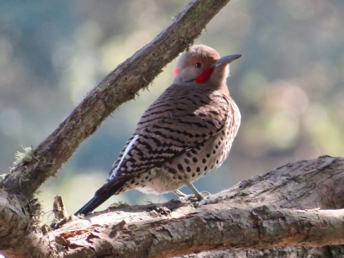

Northern Flicker
Colaptes auratus bird

Ground-foraging woodpecker that eats ants and autumn fruit; nests in aspen/poplar snags.
2 documented plant relationships.
Colaptes auratus bird

Ground-foraging woodpecker that eats ants and autumn fruit; nests in aspen/poplar snags.
2 documented plant relationships.

 Douglas Goldman, some rights reserved (CC BY-SA), uploaded by Douglas Goldman")